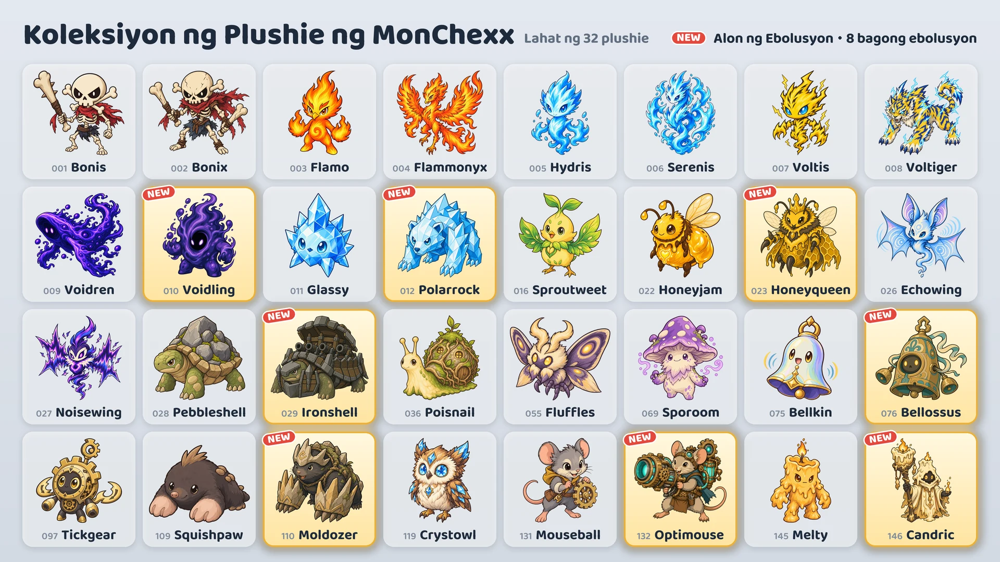

Season 1 · Update 02: Alon ng Ebolusyon
Madadagdag sa Oktubre 16 ang walong bagong ebolusyon.

Walong bagong ebolusyon
- Voidling: nag-evolve mula sa Voidren · Tank
- Polarrock: nag-evolve mula sa Glassy · Tank / Mandirigma
- Honeyqueen: nag-evolve mula sa Honeyjam · Suporta / Malayuan
- Ironshell: nag-evolve mula sa Pebbleshell · Tank
- Bellossus: nag-evolve mula sa Bellkin · Tank / Suporta
- Moldozer: nag-evolve mula sa Squishpaw · Tank / Assassin
- Optimouse: nag-evolve mula sa Mouseball · Malayuan
- Candric: nag-evolve mula sa Melty · Suporta / Malayuan
Paano makukuha
- Claw machine (event): Sa panahon ng event (Oktubre 16–24), bawat claw machine maliban sa dalawang nasa magkabilang dulo ng hanay ay may isang bagong ebolusyon kasama ng dalawang ibang plushie. Pagkatapos ng event, papasok na rin sa mga makina ang mga bagong ebolusyon sa parehong tsansa ng ibang plushie.
- Palitan ng Plushie: Ipagpalit ang 10 ekstrang plushie sa plushie na pipiliin mo (Pili at Palit), o ang 3 sa isang random na plushie (Random na Palit).
- Mga Plushie Pack: Puwede ring lumabas ang mga bagong ebolusyon sa mga plushie pack.
Paggamit ng mga nag-evolve na plushie
- Hiwalay na kinokolekta ang nag-evolve na plushie, at puwede mo itong isali agad sa team kapag nakuha mo na.
- Sa “Buuin ang Team Mo”, pumili ng plushie at i-tap ang Orihinal o Ebolusyon para palitan ang anyo nito.
- Isang plushie lang mula sa bawat linya ng ebolusyon ang puwede sa isang team.
- Hiwalay na nagle-level up ang nag-evolve na plushie mula sa orihinal na anyo nito.
Mga bagong plushie
Lumalaki rin ang mga numerong “ng Atake”, “ng Magic Power” o “ng Max HP” habang tumataas ang level ng plushie.
Voidling · Tank · Abot na 1 tile
- Higop ng Kawalan: Tumataas ang Max HP nito nang halagang katumbas ng 560% ng Magic Power + 6% ng Max HP nito sa simula ng laban, at gumagaling si Voidling nang ganoon ding halaga. Pagkatapos, nagdudulot ito ng magic damage na katumbas ng 10% ng kasalukuyang HP nito sa lahat ng kalaban sa loob ng 1 tile. Mananatili ang nadagdag na Max HP hanggang matapos ang laban.
- Piging ng Kawalan: Nakakakuha ng 10 Mana tuwing gagamit ng active skill ang isang kalaban sa loob ng 4 tile.
Polarrock · Tank/Mandirigma · Abot na 1 tile
- Hampas ng Yelo: Nagdudulot ng physical damage na katumbas ng 820% ng Atake sa target nito at 385% sa mga kalaban sa loob ng 1 tile mula roon, at nilalagyan ng Yelo ang mga tinamaan (−15% Bilis ng Atake nang 8 segundo). Kapag 3 na ang patong ng Yelo sa target nito, Nagyelo ito nang 1.5 segundo at hindi makakilos o makakuha ng Mana.
- Kristal na Balat: Nababawasan nang 20% ang magic damage na tinatanggap nito, kasama ang tuloy-tuloy na magic damage.
Honeyqueen · Suporta/Malayuan · Abot na 3 tile
- Halaya ng Reyna: Pinapagaling ang lahat ng bubuyog niya nang 100% ng kanilang Max HP, at pinapataas nang 200% ang kanilang Bilis ng Atake nang 3 segundo. Kapag kulang sa 3 ang bubuyog niya, nagtatawag siya ng 1 pa.
- Hukbo ng Bubuyog: Hanggang 3 bubuyog ang kasama niya. Sumusunod sa level ni Honeyqueen ang stats ng mga bubuyog, at tumatanggap ang bawat bubuyog ng damage na katumbas ng 4% ng Max HP nito bawat segundo. Kapag bumagsak si Honeyqueen, nagwawala ang mga bubuyog at nagiging doble ang damage na ibinibigay at tinatanggap nila.
Ironshell · Tank · Abot na 1 tile
- Umiikot na Kanyon: Umiikot ito pakaliwa sa kinatatayuan nito at nagpapaputok ng kanyon nang 6 beses. Nagdudulot ang bawat bala ng physical damage na katumbas ng 1540% ng Atake sa unang kalaban sa loob ng 2 tile sa direksiyong iyon. Hindi ito gumagalaw o nakakakuha ng Mana habang nagpapaputok, at humihinto ito kapag Natigilan o Nagyelo.
- Kutang Bao: Nakakakuha ito ng 35 Armor at 35 Magic Resist sa bawat kalaban sa loob ng 1 tile.
Bellossus · Tank/Suporta · Abot na 1 tile
- Dagundong ng Kampana: Nagdudulot ng magic damage na katumbas ng 555% ng Magic Power sa lahat ng kalaban sa loob ng 2 tile at tina-taunt sila nang 2 segundo. Habang tumatagal ito, ibinabalik ang 35% ng damage ng bawat karaniwang atake ng kalaban na tinatanggap nito (bago mabawasan) bilang magic damage sa lahat ng kalaban sa loob ng 2 tile.
- Taginting: Gumagaling ito nang 120% ng Magic Power tuwing gagamit ng active skill ang ibang kakampi sa loob ng 2 tile.
Moldozer · Tank/Assassin · Abot na 1 tile
- Lusob mula sa Lungga: Tinatanggal ang lahat ng debuff nito at humuhukay papunta sa bakanteng tile na may pinakamaraming kalaban sa paligid, saka nagdudulot ng physical damage na katumbas ng 740% ng Atake sa lahat ng kalaban sa loob ng 1 tile. Hindi ito tinatamaan habang lumilipat.
- Kukong Bato: Tumataas ang Armor nito nang halagang katumbas ng 50% ng Atake nito.
- Nagsisimula ng laban na may 0 Mana.
Optimouse · Malayuan · Abot na 4 tile
- Kanyong Laser: Nagkakarga nang 1.5 segundo, saka nagpapaputok ng laser na 1 tile ang lapad patungo sa target nito hanggang sa dulo ng court, at nagdudulot ng magic damage na katumbas ng 1210% ng Atake sa bawat kalabang tinamaan. Nakakansela ang pagpapaputok kapag Natigilan o Nagyelo ito habang nagkakarga.
- Umiinit na Circuit: Nagdadagdag ng 15% sa Bilis ng Atake ang bawat karaniwang atake, hanggang 100%. Nare-reset ito kapag gumamit ng active skill.
Candric · Suporta/Malayuan · Abot na 3 tile
- Apoy na Di Namamatay: Binibigyan ang kakamping may pinakamababang HP (maliban sa sarili) ng marka at ng shield na katumbas ng 375% ng Magic Power nang 5 segundo. Kapag babagsak na sana ang kakamping may marka dahil sa direktang damage, si Candric ang sasalo sa 200% ng damage na iyon.
- Natutunaw na Pagkit: Paunti-unting ibinabawas sa HP ni Candric ang direktang damage na tinatanggap niya sa loob ng 4 segundo.
Ranked na laban at mga badge
- Gumagamit na rin ng mga bagong ebolusyon ang mga kalaban sa ranked na laban.
- Hindi kasama ang walong bagong ebolusyon sa badge na “Koleksiyon ng Season 1”.
- Makukuha ang badge na “Eksperto sa Ebolusyon” kapag may 5 magkakaibang nag-evolve na plushie ka. Mayroon na ngayong 13 nag-evolve na plushie.
Makikita ang mga pagbabago sa balanse ng lahat ng plushie sa patch notes na “Balanse & Sistema ng Laban”.